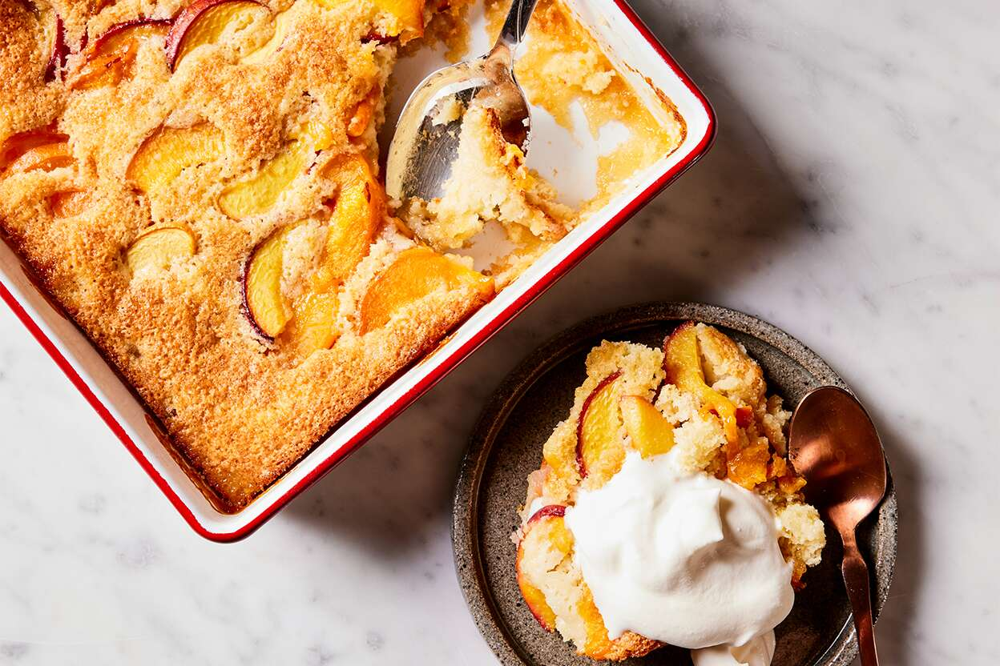

A modest member of the large family of apple-based desserts, apple cobbler is a simplified version of a pie invented by American pioneers during the 19th century. The name cobbler was derived from the word cobbled, meaning roughly put together – apples on bottom, crust on top, or the other way around, depending on the recipe.
Meal prep time : 1 hour 10 minutes
Servings : 9